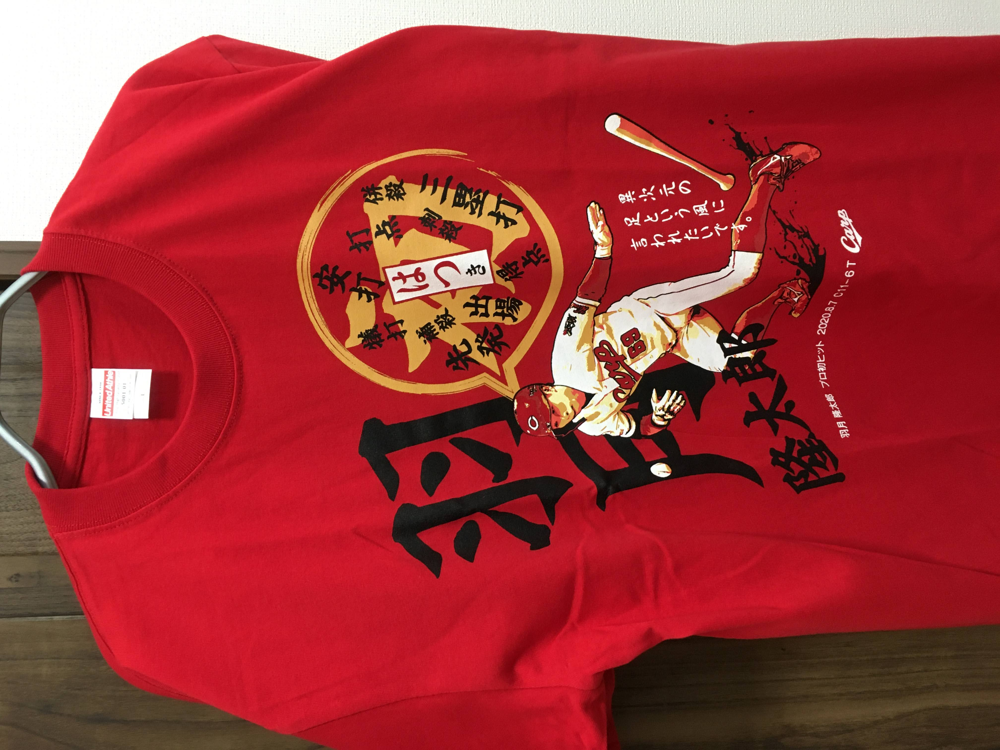
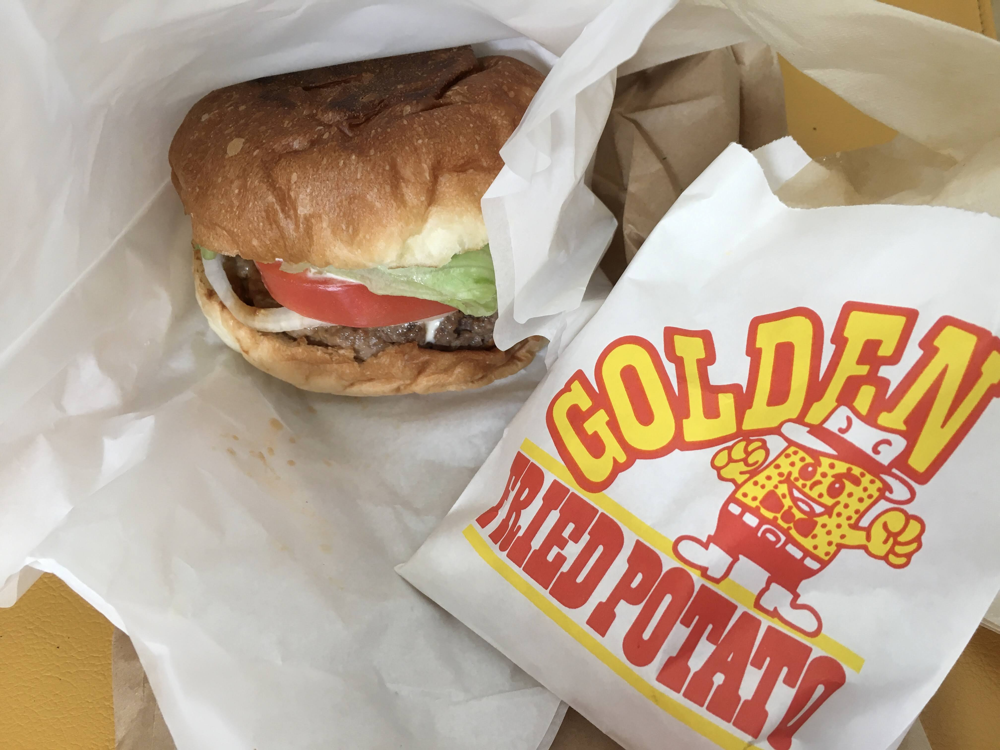
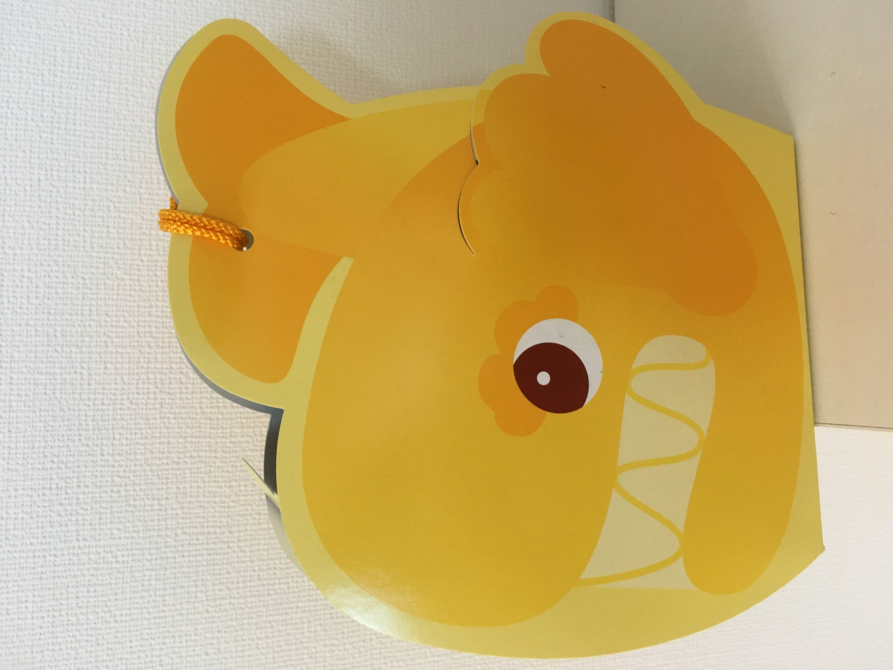
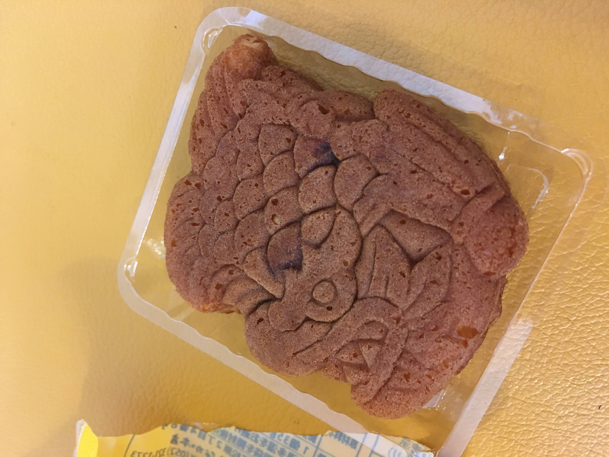
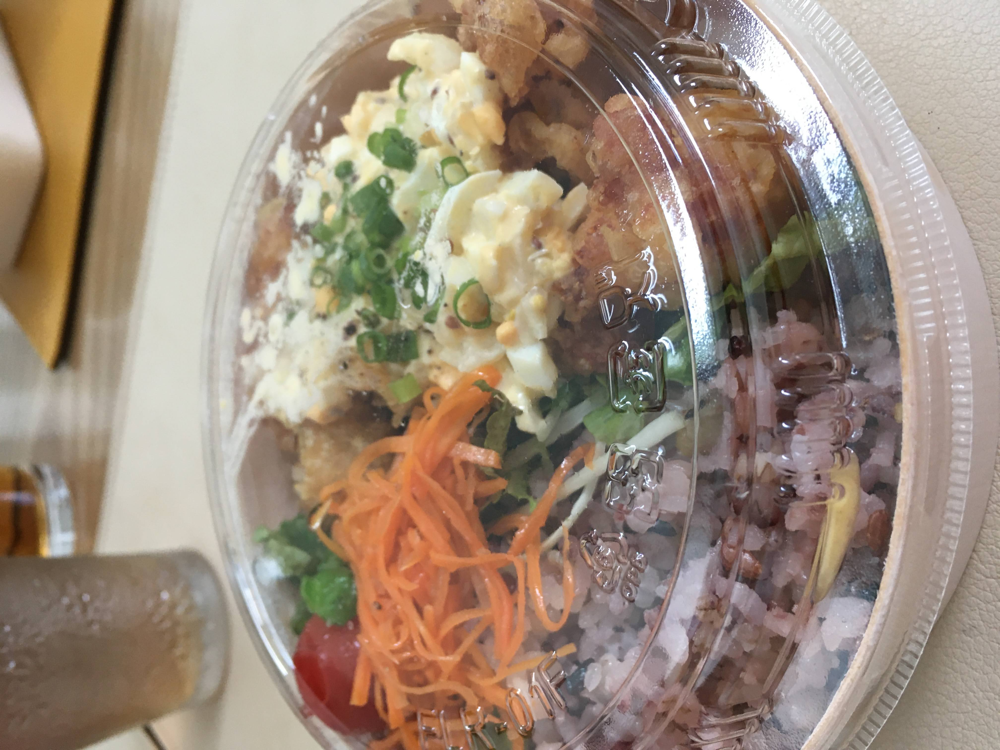
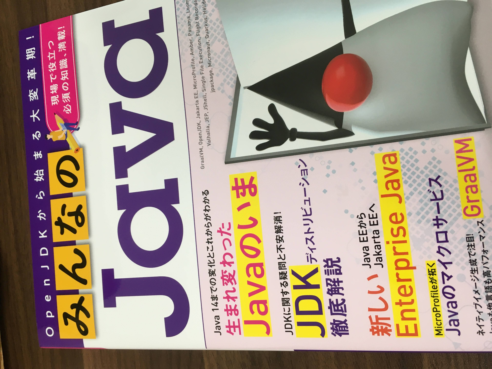
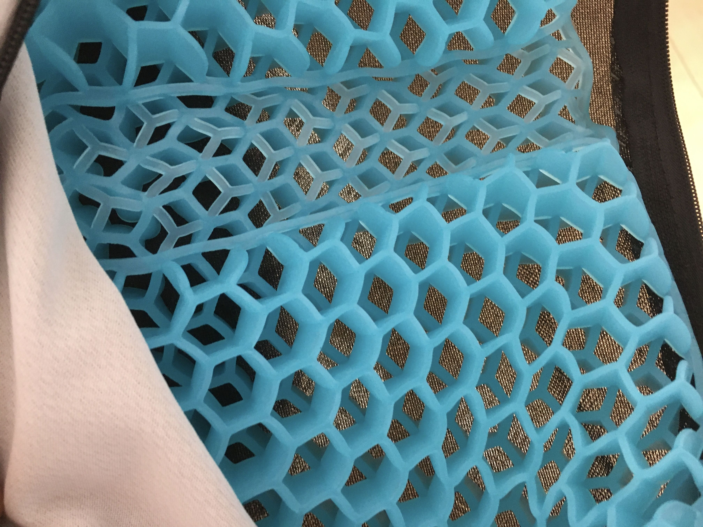
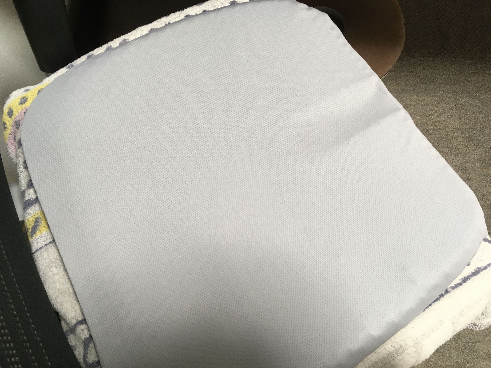

在宅172日目
3/27から始まった在宅ワークから172日が経過。当時想定していたよりも長くなってしまいました。
在宅ワークの当初は不便さややりずらさもあったのですが、今はすっかりなれてしまいました。会社通勤しないことに慣れてしまったのでその逆は少し怖いです。
さて、最近のことを書いていきます。
今年は買わないと思っていたけど買ってしまいました。羽月くんの初スタメン初ヒロインのTシャツ。

カープも弱くなってきたのでグッズも値下げが始まったのか。

安定の美味しさ。

名古屋土産。

パッケージがいい。


これでサラダがついて500円。


きしだなおき氏の本が出てので購入。Javaなのにすごくワクワクする内容ばかり。

実家に送ったふぐセット。8000円

ハニカム構造。おしりの痛いのが治った。

カバーをつけるとこんな感じ 